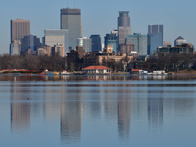
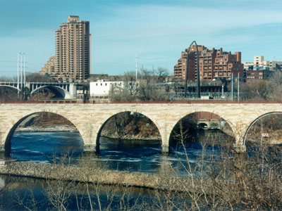
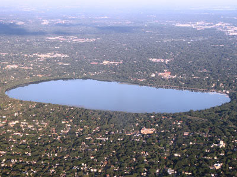
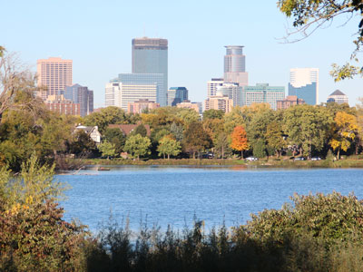
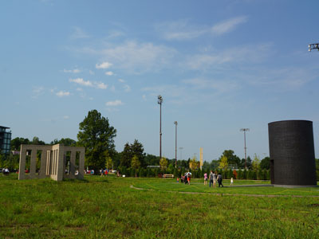
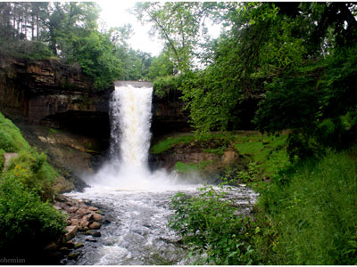
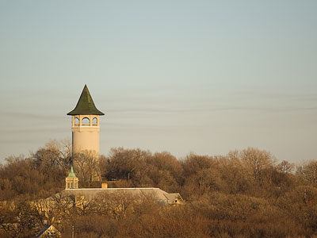
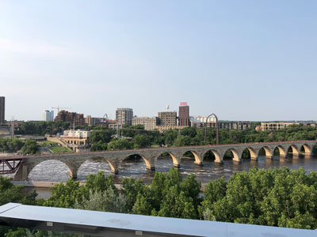

Minneapolis Travel Guide
Most populous city in Minnesota lying along both banks of the Mississippi River, just north of its confluence with the Minnesota River, and adjoins Saint Paul, the state's capital with one of the nation's best park systems, the city is abundant in water, with thirteen lakes, wetlands, creeks, and waterfalls
Places to See in Minneapolis
Runner1928, CC BY-SA 4.0, via Wikimedia Commons; Image Size Adjusted

American Swedish institute
Museum and cultural center dedicated to the preservation and study of the historic role Sweden and Swedish Americans have played in US culture and history
Runner1928, CC BY-SA 4.0, via Wikimedia Commons; Image Size Adjusted
Bakken Museum
Interactive museum dedicated to the history of electricity, magnetism, and medical innovation, featuring hands-on exhibits, scientific artifacts, and engaging educational experiences.

August Schwerdfeger, CC BY 4.0, via Wikimedia Commons; Image Size Adjusted

Bde Maka Ska
Largest lake in Minneapolis and part of the city's Chain of Lakes is surrounded by city park land and circled by bike and walking trails
Tony Webster, CC BY-SA 4.0, via Wikimedia Commons; Image Size Adjusted

First Avenue
Two music venues housed in the same landmark building in downtown Minneapolis
Runner1928, CC BY-SA 4.0, via Wikimedia Commons; Image Size Adjusted
Foshay Museum and Observation Deck
Historic observation tower and museum featuring panoramic city views, Art Deco architecture, and exhibits celebrating local history and one of Minneapolis's most iconic skyscrapers.

National Archives and Records Administration, Public domain, via Wikimedia Commons; Image Size Adjusted

Grand Rounds National Scenic Byway
Linked series of park areas that takes a roughly circular path through the city
Tony Webster from Portland, Oregon, United States, CC BY 2.0, via Wikimedia Commons; Image Size Adjusted
.jpg){kind=link}
Guthrie Theater
Center for theater performance, production, education, and professional training in Minneapolis

Bjoertvedt, CC BY-SA 3.0, via Wikimedia Commons; Image Size Adjusted

Lake Harriet
Lake in the southwest part of Minneapolis, just south of Bde Maka Ska and north of Minnehaha Creek surrounded by parkland as part of the Minneapolis Chain of Lakes

Thomson200, CC0, via Wikimedia Commons; Image Size Adjusted

Lake of the Isles
Lake connected to Cedar Lake and Bde Maka Ska with 2.86 miles of shoreline with a little under three miles of paved walking and biking paths

Tyler Vigen, CC BY 4.0, via Wikimedia Commons; Image Size Adjusted

Mall of America
Shopping mall is the seventh largest shopping mall in the world, and the largest in the western hemisphere
Tyler Vigen, CC BY 4.0, via Wikimedia Commons; Image Size Adjusted
Mill City Museum
Interactive exhibits, historic flour mill ruins, and multimedia experiences bring to life the industry that transformed Minneapolis into the flour milling capital of the world.
-400.jpg)
Greg Gjerdingen from Willmar, USA, CC BY 2.0, via Wikimedia Commons; Image Size Adjusted
.jpg){kind=link}
Mill Ruins Park
Park in downtown Minneapolis, standing on the west side of Saint Anthony Falls on the Mississippi River, interprets the history of flour milling in Minneapolis and shows the ruins of several flour mills that were abandoned
Runner1928, CC BY-SA 4.0, via Wikimedia Commons; Image Size Adjusted
Minneapolis Institute of Art
World-class art museum featuring an extensive collection spanning thousands of years, with masterworks from diverse cultures, artistic traditions, and historical periods.

Greg Gjerdingen, CC BY 2.0, via Wikimedia Commons; Image Size Adjusted

Minneapolis Sculpture Garden
11-acre park is one of the largest urban sculpture gardens in the country, with 40 permanent art installations

Juliabohemian, CC BY-SA 3.0, via Wikimedia Commons; Image Size Adjusted

Minnehaha Park
City park and home to Minnehaha Falls and the lower reaches of Minnehaha Creek
Runner1928, CC BY-SA 4.0, via Wikimedia Commons; Image Size Adjusted
Museum of Russian Art
Museum dedicated to Russian art and culture, featuring paintings, sculptures, folk art, and rotating exhibitions spanning centuries of artistic achievement.

Marumari at the English-language Wikipedia, CC BY-SA 3.0, via Wikimedia Commons; Image Size Adjusted

Prospect Park Water Tower
Historic water tower built in 1913 on Tower Hill Park, a hilltop park

Christina Czuhajewski, CC BY-SA 4.0, via Wikimedia Commons; Image Size Adjusted

Stone Arch Bridge
Former railroad bridge crossing the Mississippi River at Saint Anthony Falls in downtown Minneapolis is now used as a pedestrian and bicycle bridge
Runner1928, CC BY-SA 4.0, via Wikimedia Commons; Image Size Adjusted
Tower Hill Park
Historic hilltop park featuring wooded walking paths, scenic overlooks, tennis courts, and the iconic Witch's Hat water tower.
Runner1928, CC BY-SA 4.0, via Wikimedia Commons; Image Size Adjusted
Walker Art Center
Contemporary art museum renowned for innovative exhibitions, modern design, multimedia installations, and one of the largest collections of contemporary art in the Midwest.
Runner1928, CC BY-SA 4.0, via Wikimedia Commons; Image Size Adjusted
Weisman Art Museum
Striking modern art museum showcasing contemporary and traditional works while serving as an architectural landmark overlooking the Mississippi River.
Overview
Minneapolis is the largest city in Minnesota and, together with neighboring St. Paul, forms the Twin Cities, the center of a metropolitan area of more than three million people. Located on both banks of the Mississippi River, it is known for its park system, which is often ranked among the best in the country, for its chain of lakes within the city limits, and for a strong arts and music scene that produced Prince. It is also a corporate center, home to companies such as Target, Best Buy, and U.S. Bank.
Visitors come to Minneapolis for the Walker Art Center and the Minneapolis Sculpture Garden, the Minneapolis Institute of Art, the Guthrie Theater, the First Avenue music club, and the Mall of America in nearby Bloomington. They also come for the lakes, the riverfront at St. Anthony Falls, the skyway system, the food scene, and professional sports. The city is clean, bikeable, and friendly, with a strong Scandinavian and Midwestern character.
History
The Dakota people lived along the river and the lakes for centuries and called the area Mni Sota Makoce, and the Falls of St. Anthony were a sacred place. Fort Snelling was built in 1819 at the junction of the Mississippi and Minnesota Rivers, and the city was incorporated in 1867, taking its name from the Dakota word "mni" (water) and the Greek "polis" (city). The waterpower of the falls turned Minneapolis into the flour-milling capital of the world from the 1880s to the 1930s, and companies such as Pillsbury and General Mills were founded here. In the twentieth century the city diversified into banking, retail, medical devices, and the arts, and in recent decades its riverfront has been redeveloped with parks and museums such as the Mill City Museum.
Sightseeing and Popular Landmarks
The Stone Arch Bridge, a historic railroad bridge converted to a pedestrian bridge, gives views of St. Anthony Falls and the skyline, and Mill Ruins Park and the Mill City Museum explain the flour milling history. The Minneapolis Sculpture Garden, with its giant "Spoonbridge and Cherry," is the city's most recognizable icon, and the Foshay Tower observation deck has views over the city. Minnehaha Park has a 53-foot waterfall, and other sights include the Prospect Park Water Tower and the Mall of America, the largest mall in the country.
Culture and Museums
Minneapolis has one of the strongest arts scenes in the country. The Walker Art Center shows contemporary art, the Minneapolis Institute of Art has a free collection of more than 90,000 works, and the Weisman Art Museum, designed by Frank Gehry, is on the University of Minnesota campus. The American Swedish Institute, the Museum of Russian Art, and the Bakken Museum are smaller museums, and the Guthrie Theater and the Minnesota Orchestra are major performing arts organizations. First Avenue, made famous by the Prince film Purple Rain, and Paisley Park in nearby Chanhassen celebrate the city's music heritage.
Parks
The Minneapolis park system is known for the Chain of Lakes, which includes Bde Maka Ska, Lake Harriet, and Lake of the Isles, with walking, biking, and boating, and the Grand Rounds Scenic Byway, a 51-mile route that circles the city. Minnehaha Park has the waterfall and trails, and Tower Hill Park offers views of the city. In winter, the lakes are used for ice skating, cross-country skiing, and ice fishing, and the Minneapolis skyway system connects downtown buildings with enclosed walkways.
Sports
Minneapolis has four major professional teams. The Minnesota Vikings of the NFL play at U.S. Bank Stadium, the Minnesota Twins of Major League Baseball play at Target Field, and the Minnesota Timberwolves of the NBA and the Minnesota Lynx of the WNBA play at Target Center. The Minnesota Wild of the NHL and Minnesota United of MLS play across the river in St. Paul.
Seasons and Weather
Minneapolis has a humid continental climate with a wide range of temperatures. Summers are warm and humid, with highs in the 80s°F, and winters are long, cold, and snowy, with highs in the teens and 20s°F and about 55 inches of snow. Spring and fall are short, and the best time to visit is from late spring to early fall, when the lakes and parks are most active, though winter has its own festivals and outdoor sports.
This article uses material from Wikipedia as well as information from official tourism and institutional sources. Key references include Meet Minneapolis, Minneapolis Park & Recreation Board, Walker Art Center, Minneapolis Institute of Art, Mill City Museum, Minnesota Vikings, and National Weather Service Twin Cities. Wikipedia material is from the articles "Minneapolis" and "History of Minneapolis", and is available under the Creative Commons Attribution-Share-Alike License 3.0.